Product
Internship.
在既有产品、业务目标与开发约束中，持续推进从内容广场到 AI 设计工具、再到会员体系的界面体验。这里记录的不是课堂命题，而是真实上线语境中的设计判断与迭代。
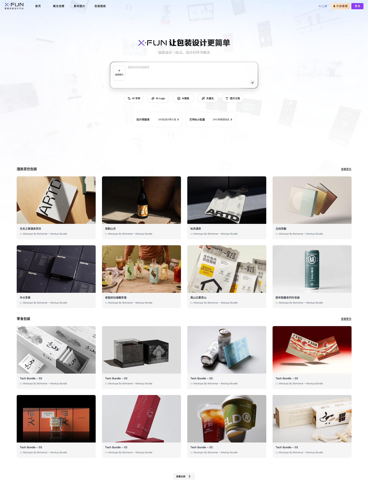
真实业务
Real Constraints.
设计目标不仅是“好看”，还需要同时服务内容供给、工具转化、会员运营与跨角色使用路径。
业务目标
让包装灵感被发现，并自然连接到 AI 工具与设计服务。
多角色入口
兼顾品牌方、设计师及工厂设备厂家的不同任务。
交付约束
在现有组件、开发周期与内容资源中完成可落地方案。
实习期的设计需求多以短周期、模块化任务推进，并依据项目排期分配给不同实习生协作完成，因此最终产出并非单一功能的连续全流程，而是分布在多个真实业务节点中的设计切片。本案例不刻意扩充数量，只收录我实际参与、能够说明设计判断与迭代过程的页面；它们共同呈现了我在真实团队中响应需求、统一体验并推进落地的工作方式。
广场页与案例浏览
广场页承担平台内容发现与服务转化的双重任务。通过重组内容密度、分类入口与推荐节奏，让用户先快速获取灵感，再自然进入案例详情、字体资源与相关服务。
用户希望在有限时间内找到与行业、品类和风格相符的包装参考。
用精选大卡建立视觉焦点，以规则网格承接持续增长的内容数量。
探索不同内容编排方案，并补齐列表、详情与相关推荐之间的浏览链路。
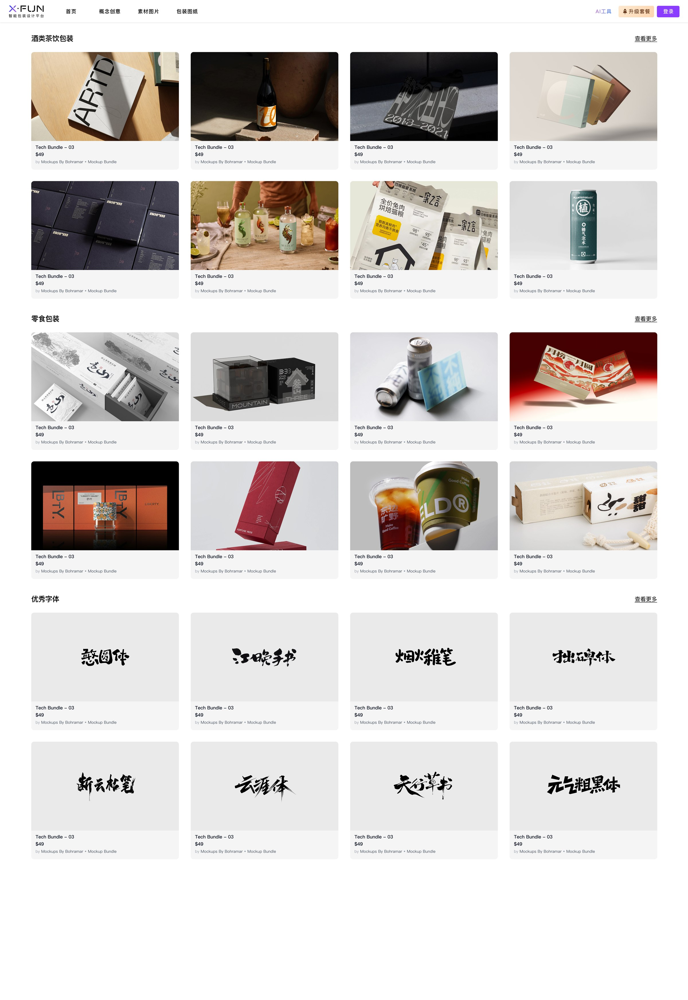
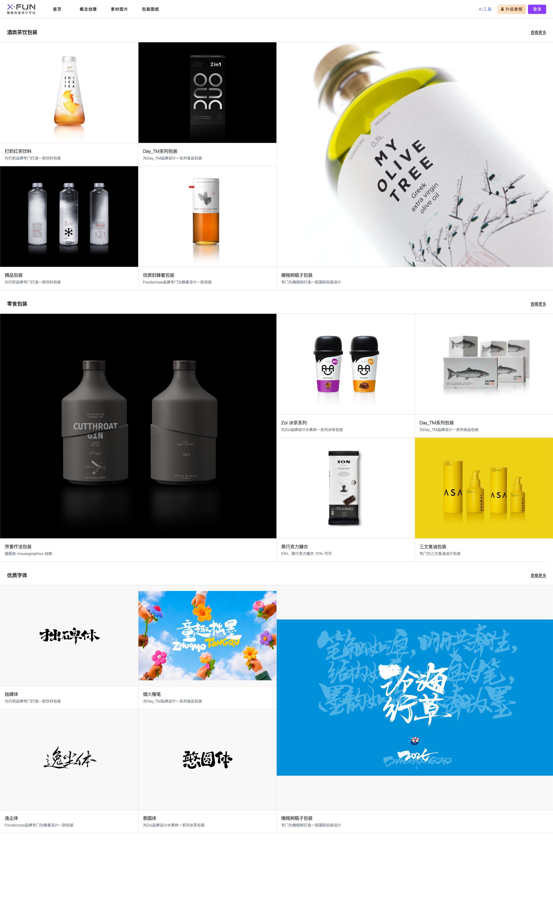
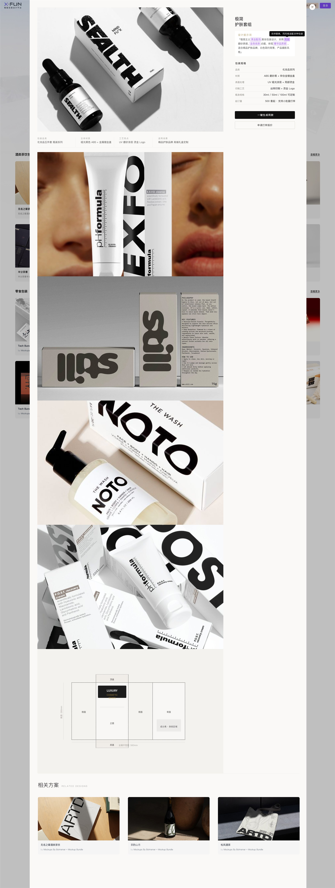
弹窗筛选页与字体工具
针对中文字体选择维度多、判断成本高的问题，将文字输入、方向、笔触效果与风格筛选集中在侧栏弹窗中，并同步展示可直接使用的字体灵感，缩短从筛选到生成的路径。
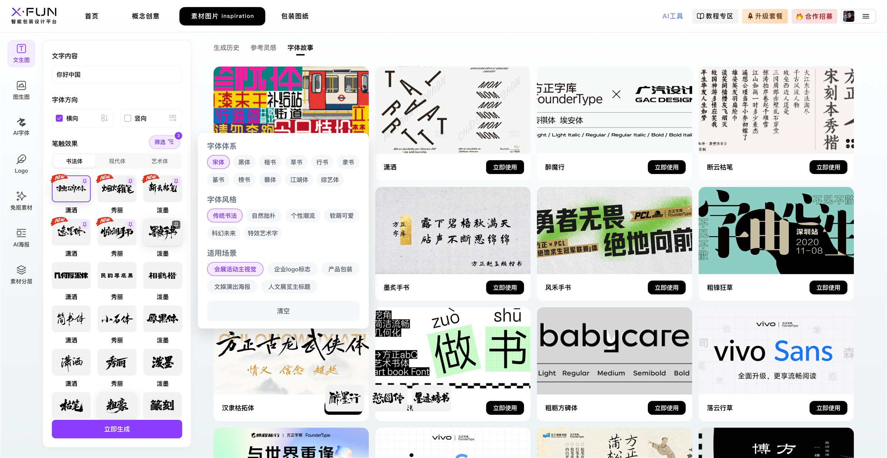
筛选信息不离开当前任务
将筛选条件组织在固定侧栏中，用户可持续预览结果，避免频繁打开与关闭多层页面。
从专业参数转译为视觉语言
用字体故事、风格标签和场景分类辅助选择，让非专业用户也能快速建立判断。
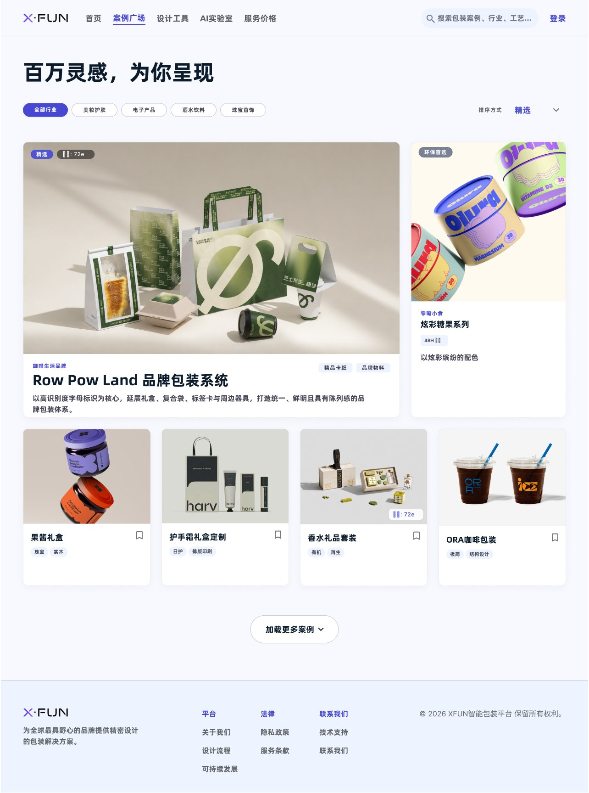
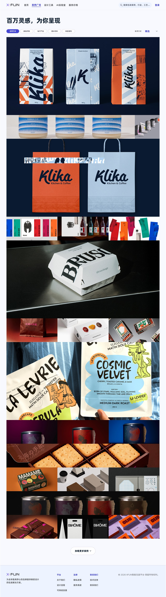
个人信息页与会员状态
个人信息页需要同时承载身份识别、会员权益、积分信息与高频功能入口。围绕个人版与专业版两类用户，统一状态结构，并通过色彩和标签差异明确当前身份。
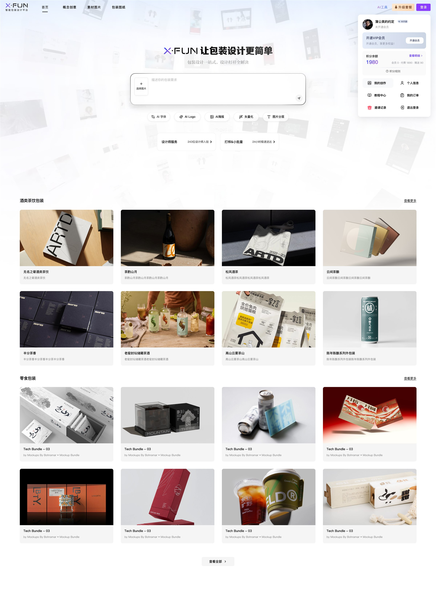
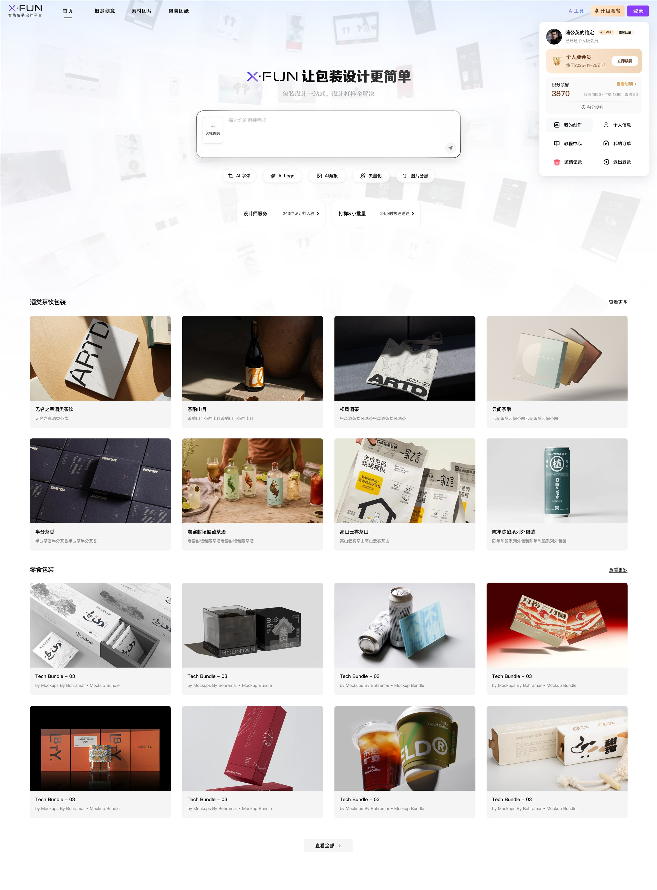
会员卡片局部状态
作为个人信息页的组件补充，对比未开通、专业版与个人版三个会员阶段在权益提示、积分信息和功能入口上的状态差异。
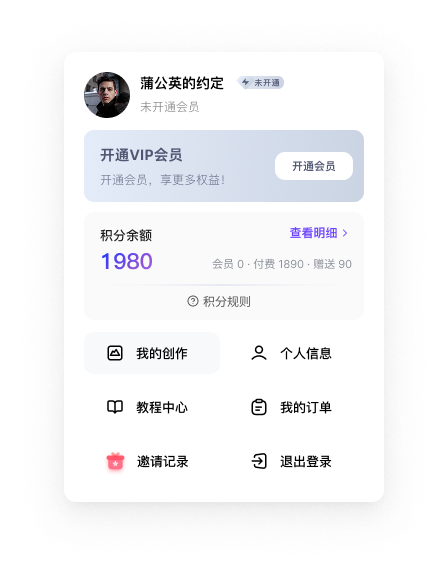
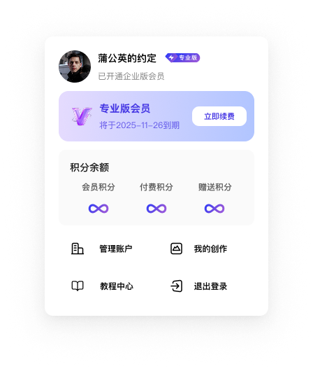
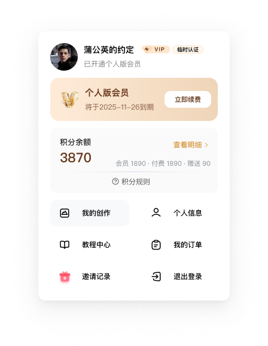
从画面到产品判断
先解决信息优先级
真实产品中，每个入口都有业务诉求；设计需要通过层级和节奏建立清晰取舍。
用系统承接迭代
把会员状态、卡片规则和间距规范沉淀为可复用结构，降低后续扩展成本。
面向交付沟通
方案表达从单张效果图转向完整状态、边界条件与开发可实现性。
理解转化链路
将灵感内容、AI 工具与会员权益串联，让体验服务于完整业务路径。
Tangping Brand Identity
Conceptual Brand Project